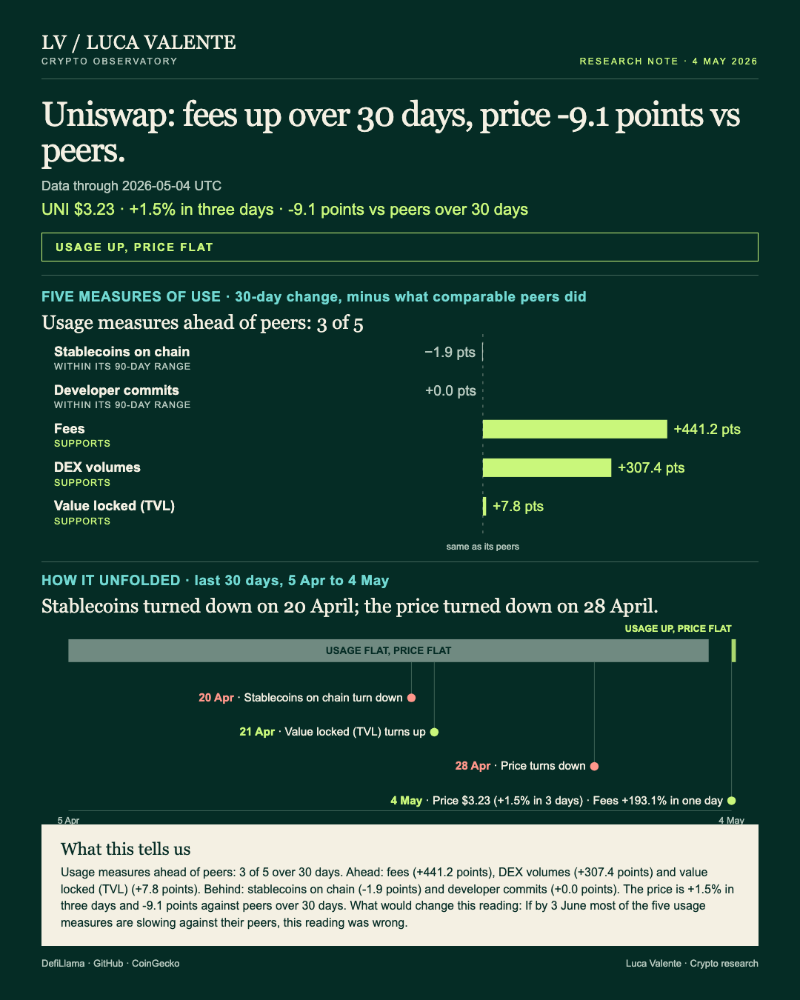
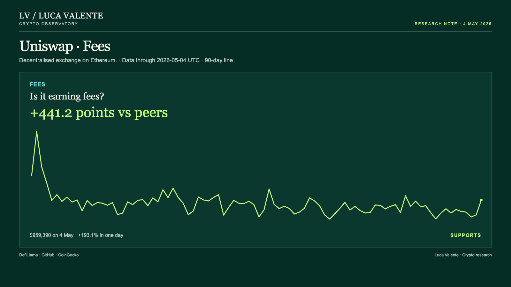
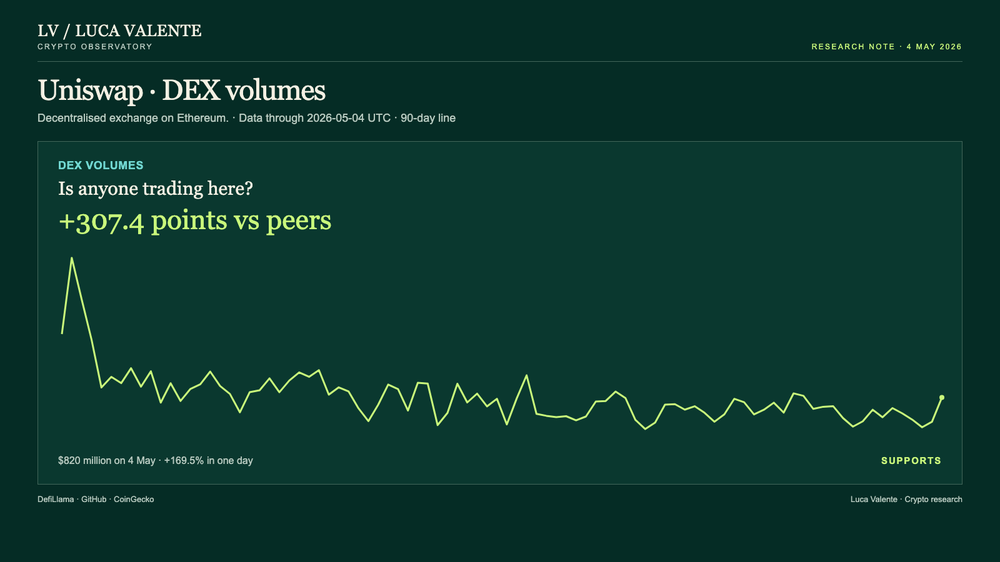

Training note, written on 23 September 2026 from data as of 4 May 2026. Not part of the published series.
Uniswap's Fee Jump Has No Match In Its Own Recent Record

Whether Uniswap's 193.1% jump in daily fees is a turning point or one loud day nobody remembers isn't clear yet. It matters regardless. Anyone judging whether Uniswap is gaining ground for real, rather than just having one busy day, needs to know which one this turns out to be.
Its cover marks the reading itself: usage up, price flat, with a 3 June line already drawn for checking it later. Nothing more, nothing less. Uniswap is a decentralised exchange on Ethereum, the kind where people swap tokens directly against a shared pool, and UNI is its own separately traded token.
Fees paid to use the exchange came to $959,390 on 4 May, up 193.1% from $327,284 the day before. That's the sharp part. The ninety days behind it are wider than one day suggests: a high of $3.87 million on 5 February, a low of $144,103 on 4 April, with today's figure landing inside that range rather than above it. Fees are up 565.8% over 30 days, well past the 124.6% median gain among the 17 entities, out of 27 in the group, that report fees at all. Net of that group, Uniswap's fees are ahead by 441.2 points.

Trading volume moved the same way. $820 million changed hands on 4 May, up 169.5% from $304 million a day earlier, still inside its own ninety-day band: a peak of $3.79 billion on 5 February, a floor of $150 million on 4 April. Over 30 days, volume is up 447.6%, against a 140.3% median gain among all 27 entities in the group that report DEX volumes. Net of the group: 307.4 points ahead.

Capital sitting in Uniswap's contracts, its value locked, closed at $1.81 billion on 4 May, almost unchanged from the day before. Over 30 days it's up 13.8%, against a 6.0% median gain among the 16 group entities that report a comparable figure: a net edge of 7.8 points. The reading itself sits neither at its ninety-day high nor at its low. Three measures, one direction.
Against all three, UNI itself closed at $3.23 on 4 May, up 1.5% over three days and 1.9% over 30 days. That 30-day gain trails the group by 9.1 points: the 11 entities in the group with a listed price gained 11.1% at the median. Fees, trading volume and value locked all climbed. The price barely moved.
Not every line agrees. Developer commits rose 1.1% over 30 days, which reads like progress on its own, until it's set against the 11 entities in the group that also report commits: their median gain was 1.1% too, an identical number, leaving the net gap at exactly zero. Stablecoins held on Ethereum, the chain Uniswap runs on, sat close to flat at $166.00 billion on 4 May, 1.9 points behind a group whose median gained 1.9%. What surprised me is the sequence behind all five lines: commits turned down first, in the week starting 22 March, six weeks before this reading; stablecoins on the chain turned down on 20 April, 14 days out; value locked turned up the very next day, on 21 April; fees fell in four of the seven days starting 28 April, the same date DEX volumes and the price itself turned down. The earliest signal was the quietest one.
There's a mid-course check on this already, sitting in the middle of what's known and what isn't: If by 3 June most of the five usage measures are slowing against their peers, this reading was wrong. Today's numbers don't already meet that bar: three of the five, fees, DEX volumes and value locked, are ahead of their groups, not behind. What's missing matters just as much. The numbers here carry no explanations attached: no announcement, no news item, nothing that claims to be a reason for the jump. There's no wallet or user count next to them either; usage in this note means only fees, commits, stablecoins on the chain, locked value and trading volume, nothing wider. No transaction count from a scaling network sits alongside them, and that gauge simply isn't part of this note. And the figures stop on 4 May: whatever the market did once this note was written isn't something visible from here.
That question is really what this note is testing: has Uniswap seen a day like this before? On the record this note covers, no. Since September 2025, 13 other protocols in the same 27-entity group have produced 108 one-day fee jumps at least as large as today's 193.1%, and Uniswap itself has produced none of them. A week later, fees were back at or above the level of the jump in 31 of those 108 cases. A month later, the share was 26 of 100, with 8 of the 108 too recent to have an outcome yet. Uniswap doesn't have a base rate of its own here. It's borrowing one from everyone else in the group who has actually lived through this.
History here is one-sided: everything known about what follows a jump this size comes from other exchanges' records. Uniswap has none of its own. Whether this is the exception or just another entry in the same tally isn't something the 4 May numbers can settle by themselves.
Sources: DefiLlama, GitHub, CoinGecko.
Peer group: 26 exchanges tracked by DefiLlama (who they are). 'Net of the group' is the 30-day change minus the group's median.
Not financial advice. This is a research note based on public on-chain data.